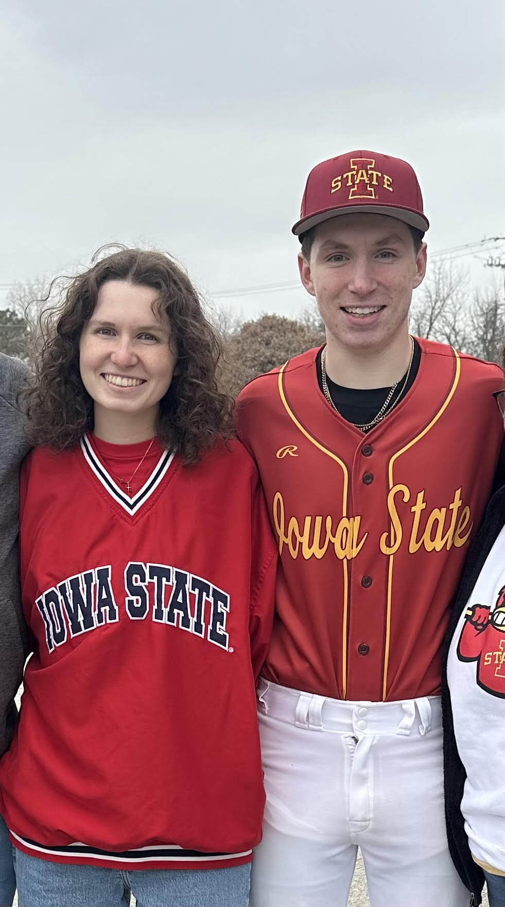
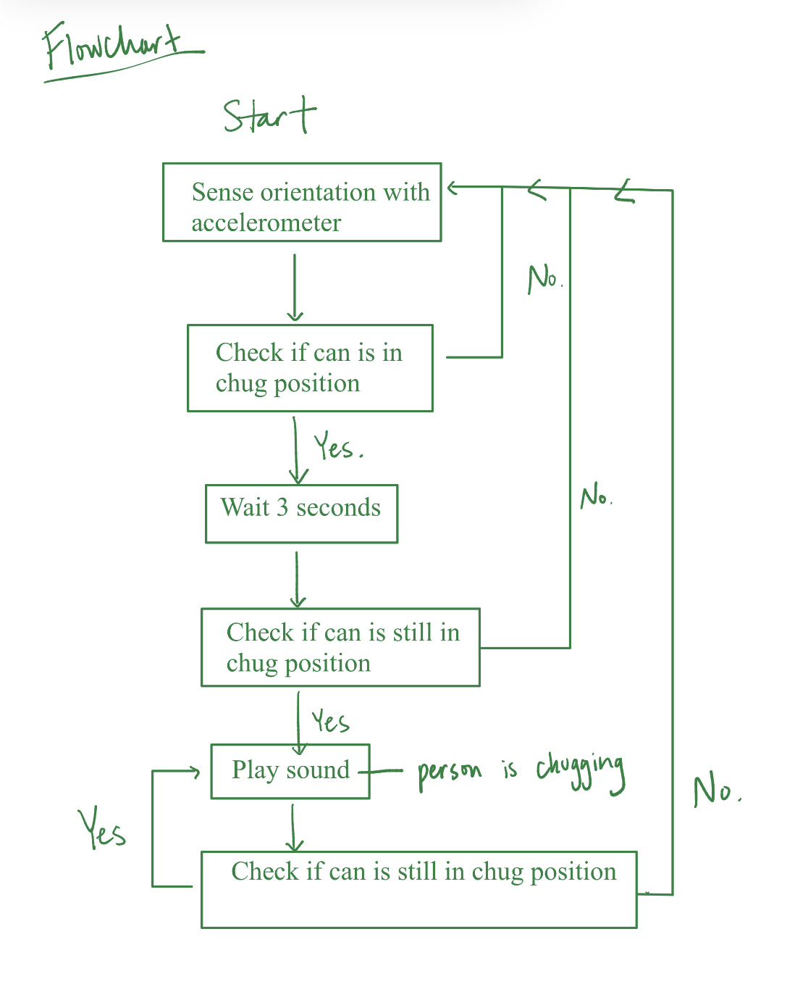
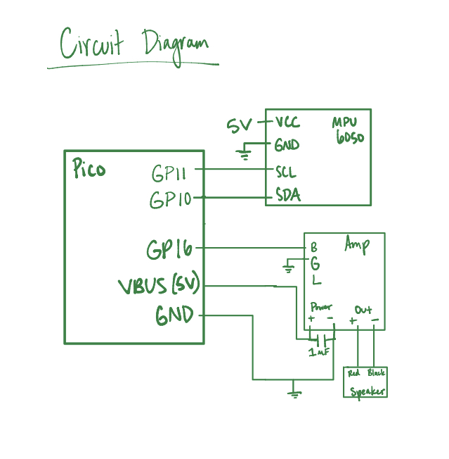
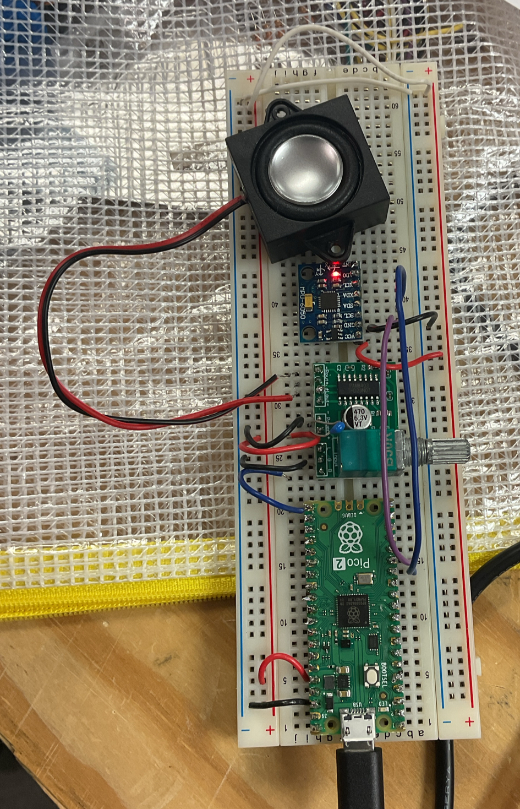
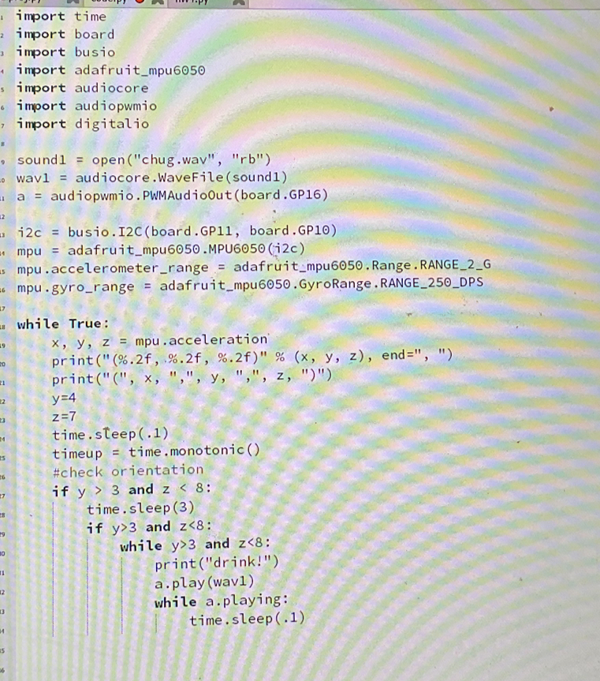
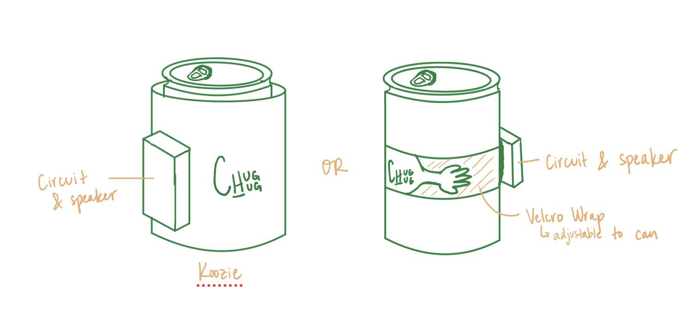

What I Saw
My brother's birthday coming up on the calendar.

What I Thought
I want to give my brother a unique gift. What is something he enjoys? He just joined a fraternity -- drinking beer!

What I Did
- Identified an opportunity space to create a personalized gift relevant to my brother's current life events
- Designed how my ideal circuit would function for my use case - a college student chugging beer - and selected the appropriate sensors and circuit components
- Coded a Python program to acheive my desired function
- Iterated my code and circuit design to improve the audio quality and timing
- Built a functional prototype using a Raspberry Pi, an accelerometer, an amplifier, and an audio software
- Drew two potential product embodiments that would allow the circuit to be effectively attached to a beer can

What I Created
By the time I had to leave for break, I created a functional responsive circuit prototype and identified future steps for the project. The responsive circuit sensed its own angle orientation with respect to the ground using an accelerometer. If the orientation was in an optimally tilted position for "chugging" liquid for three seconds, the speaker would activate. This three second requirement ensured that a user trying to get the last drop of their drink would not be falsely accused of trying to chug. The audio recording of me chanting "Chug! Chug! Chug!" would play until the can was tilted less than the threshold angle again. I filmed a video of the prototype to show my brother; he loved the idea.
While I was ultimately unable to give him the gift on his birthday, the originality and thoughtfulness of the idea spoke volumes. What I was able to produce showed how I see my little brother, and anticipate his needs as a person, even when we're separated by distance. The time I put in working on his circuit, despite my other schoolwork, was evidence of the lengths I would go to foster our relationship.


Why Include This?
I am always looking to improve the lives of those around me in imaginative and unexpected ways. Being able to enhance a piece of my brother's college life is exciting in itself. But, this project showcases my ability to listen to users and translate nuanced experiences into product design features. I didn't ask my brother, "What do you want for your birthday?" I simply asked, "What's going on in your life?" and extracted user needs from there.
This project also shows the capability and speed in which I can apply techincal skills, such as circuitry design and coding; within a five week span, I was able to take the ChugHug from a concept to a minimal viable prototype. I hope to render, 3D print, and deliver the ChugHug for my brother's next birthday.
